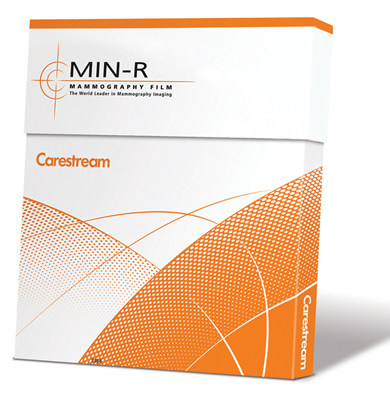

Carestream min-r ev sistema para mamografía

DESCRIPCIÓN:
Obtenga el rendimiento óptimo que necesita, y que sus pacientes merecen, con el sistema pantalla-película CARESTREAM MIN-R EV para mamografía. Con una mejor visualización de todo el seno y una mayor latitud de exposición, supera incluso el indiscutible estándar de calidad de la industria el sistema pantalla-película CARESTREAM MIN-R 2000.
El sistema pantalla-película MIN-R EV es el mejor sistema para Mamografía de Carestream y, por lo tanto, constituye la opción idónea para un sistema de imágenes de mamografía superior.
CARACTERÍSTICAS:
Tecnología avanzada: Dos avances tecnológicos hacen posible este revolucionario sistema pantalla-película para mamografía:
Contraste visualmente adaptable: El ojo humano pierde la capacidad que le permite distinguir las diferencias en áreas densas a medida que la imagen se oscurece. Esto dificulta la detección de lesiones en las zonas más oscuras de una radiografía. El sistema MIN-R EV compensa esta característica manteniendo el contraste a medida que la densidad aumenta.
• Utiliza nuevos granos de emulsión que mejoran el contraste.
• Mantiene el contraste a medida que aumenta la densidad.
• Mejora la visualización de las imágenes anatómicas del seno (incluidas las anomalías).
Estructura exclusiva de capas de emulsión de película:
• Proporciona un contraste superior y una mayor latitud de exposición.
• Con una exposición, permite mejorar las imágenes del parénquima y de los contornos.
• Proporciona un proceso de secado más eficaz.
Un verdadero sistema nuevo: La mejora del rendimiento que proporciona el sistema pantalla-película MIN-R EV es posible, ya que la película y las pantallas se han diseñado para obtener una calidad superior y lograr resultados óptimos trabajando en conjunto.
Alto contraste: Gracias a un contraste general superior al del sistema CARESTREAM MIN-R 2000, con una mayor latitud de exposición, el sistema pantalla-película MIN-R EV efectúa lo siguiente:
• Mantiene un alto contraste en densidades ópticas elevadas.
• Penetra en el tejido glandular sin necesidad de perder el contraste en zonas grasas o en el contorno del seno.
• Mejora la detección de anomalías en una gran variedad de estructuras y de tipos de senos.
Granos más finos:
Una película más lenta y pantallas más rápidas, en comparación con el sistema MIN-R 2000, proporcionan lo siguiente:
• Grano más fino.
• Granularidad inferior que reduce el ruido de película.
• Detalles más nítidos para mejorar la visualización de pequeños objetos apenas visibles.
Más brillo: Los exclusivos granos de emulsión producen un pie más definido que:
• Proporciona blancos más puros en tejidos glandulares que entregan más detalle.
• Ayuda a revelar objetos pequeños apenas visibles (como las microcalcificaciones).
• Proporciona un amplio contraste en tejidos grasos y en el contorno del seno.
Mejora de las pantallas: Las estructuras de capas y fósforo mejoradas en las pantallas MIN-R EV de CARESTREAM proporcionan una función de transferencia de modulación (MTF) incluso superior, además de más luz y brillo que las pantallas MIN-R 2000 y MIN-R 2190 de CARESTREAM.
Estas combinaciones de película y pantalla, cuando se utilizan con la película MIN-R EV:
• Proporcionan más detalle y una nitidez superior que los sistemas equivalentes de MIN-R 2000.
• Aumentan el nivel de nitidez y disminuyen el ruido de película al mismo tiempo.
Opción de dos pantallas/velocidades:
Seleccione la pantalla que mejor se acomoda a sus necesidades:
• Cassette MIN-R 2 con pantalla MIN-R EV 150 para obtener una calidad de imagen óptima y un nivel de ruido inferior.
• Cassette MIN-R 2 con pantalla MIN-R EV 190 para obtener una calidad de imagen óptima y una dosis inferior.
DATOS COMPLEMENTARIOS: Si desea obtener más información sobre el sistema para mamografía CARESTREAM MIN-R EV o los químicos Carestream, favor de contactar al representante CARESTREAM de su localidad o a:
CARESTREAM
Teléfono: (33) 3134-6200
o bien, visítenos en: www.carestream.com.mx